Protective fungicide by contact action, early blight on potatoes at a rate of 200 g / 100 liters of water
Fungicop
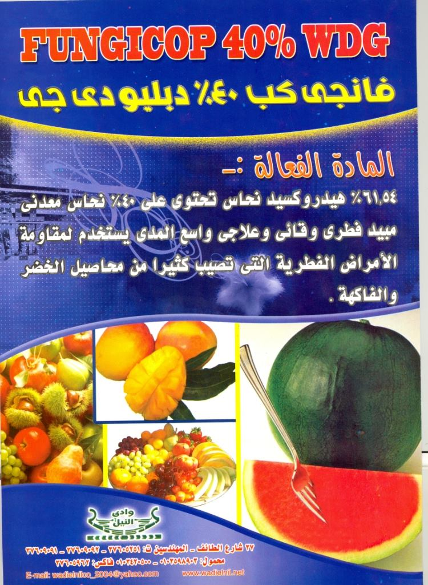
Protective fungicide by contact action, downy mildew in grapes at a rate of 250 g / 100 liters of water
Matador
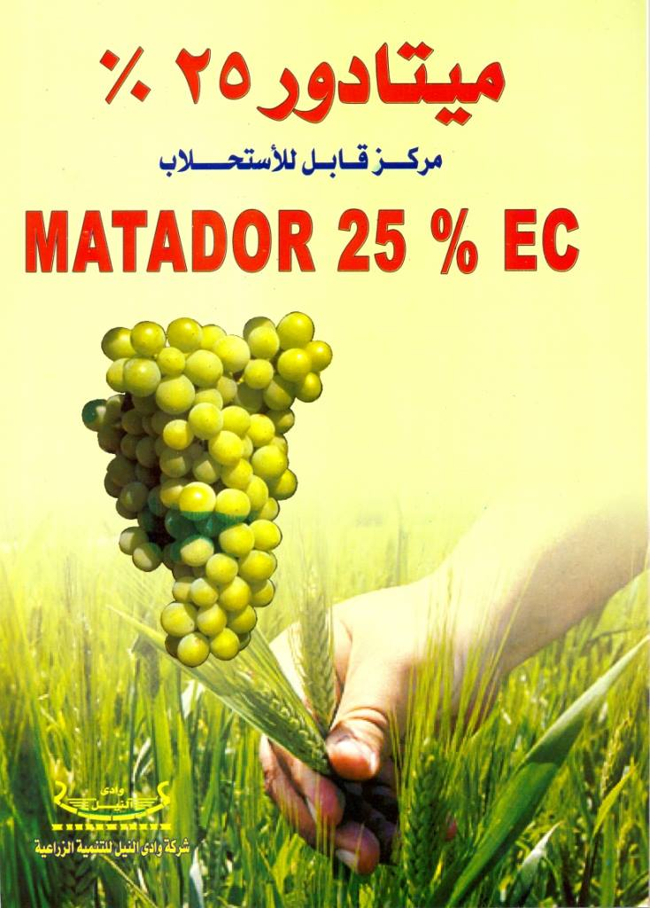
Systemic curative fungicide, powdery mildew in grapes at a rate of 15 cm / 100 liters of water
Procure
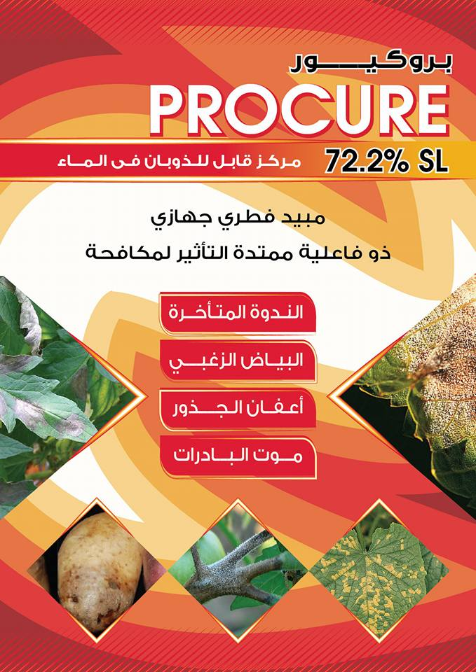
Systemic curative fungicide, late blight on potatoes at a rate of 250 cm / 100 liters of water.
Stromac
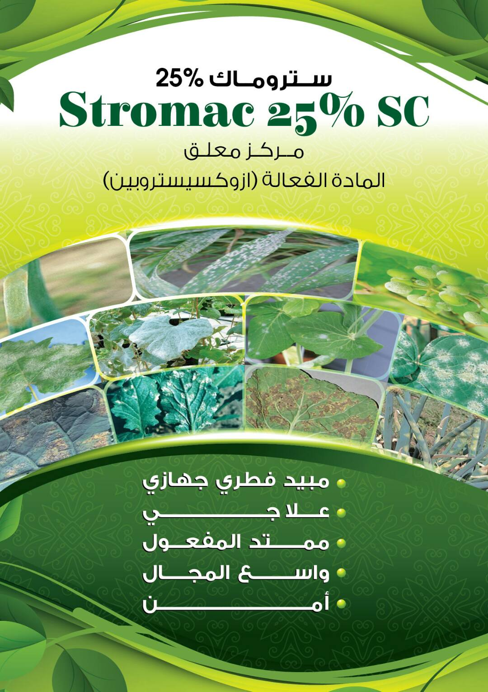
Systemic curative fungicide, late blight on potatoes at a rate of 50 cm/100 liters of water.
Teramac
Systemic curative fungicide, root rot and seedling death in peanuts at a rate of 3g/kg seed
Curenox
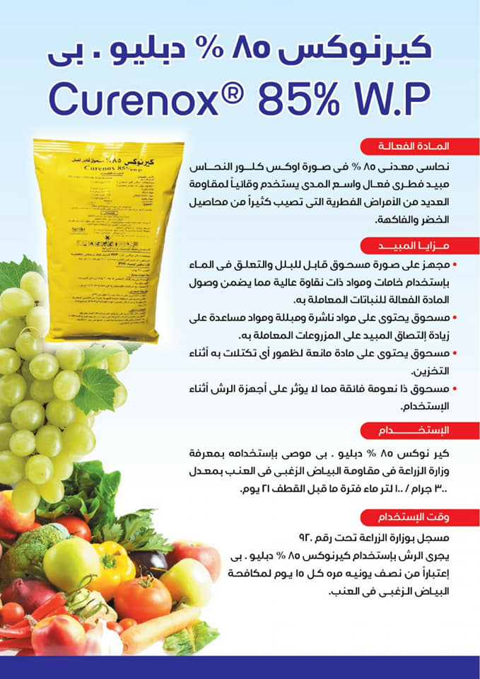
Protective fungicide by contact action, downy mildew in grapes at a rate of 250 g / 100 liters of water
Scoropio
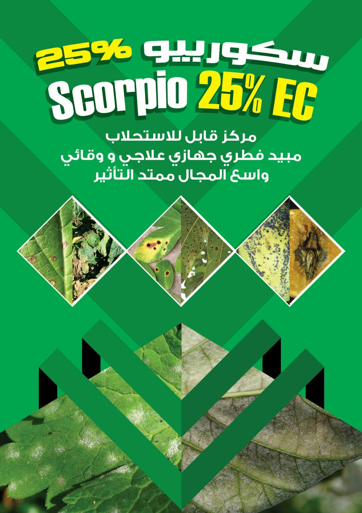
Systemic curative fungicide for early blight on potatoes at a rate of 50 cm/100 liters of water.
Sunzole
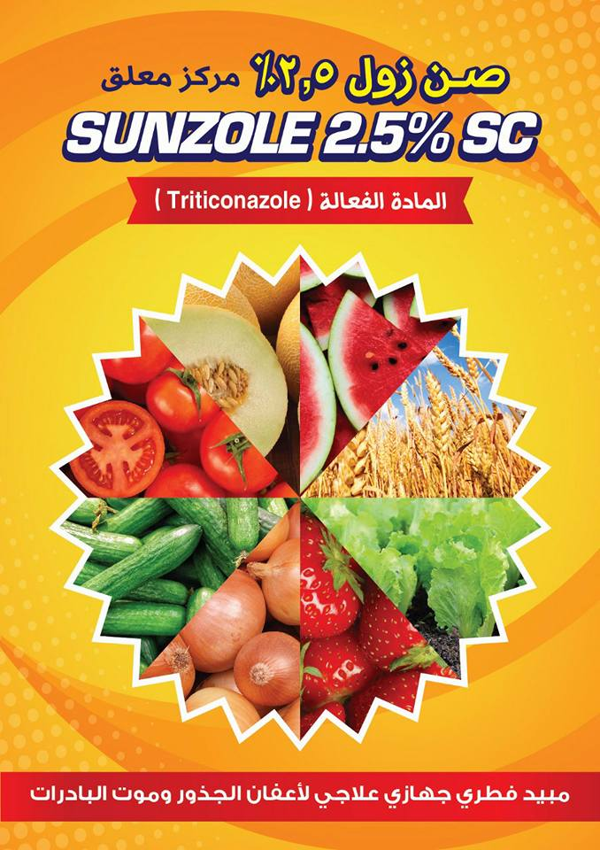
A systemic and preventive curative fungicide on loose smut in wheat at a rate of 2 cm/kg of seed
Silatinil
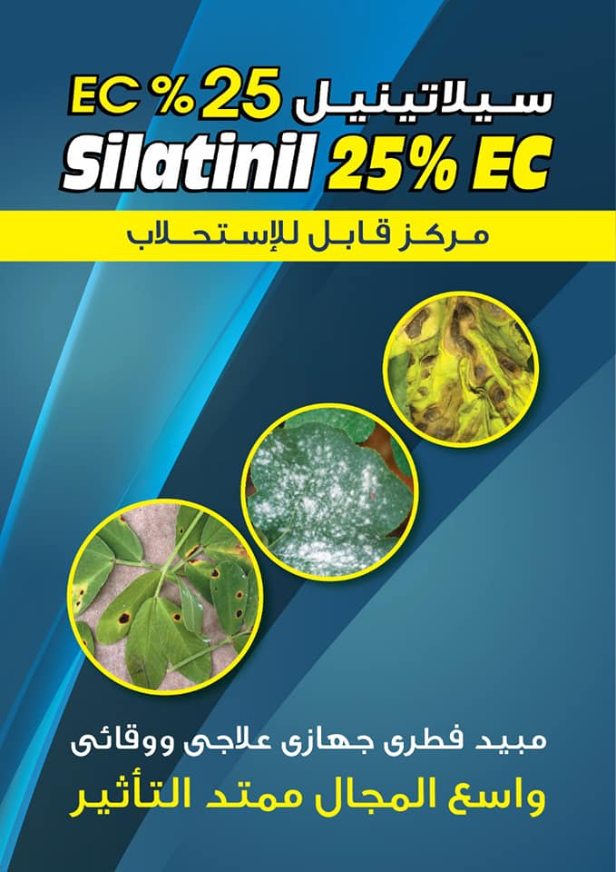
Systemic curative fungicide, powdery mildew of strawberries at a rate of 25 cm / 100 liters of water
Razonil
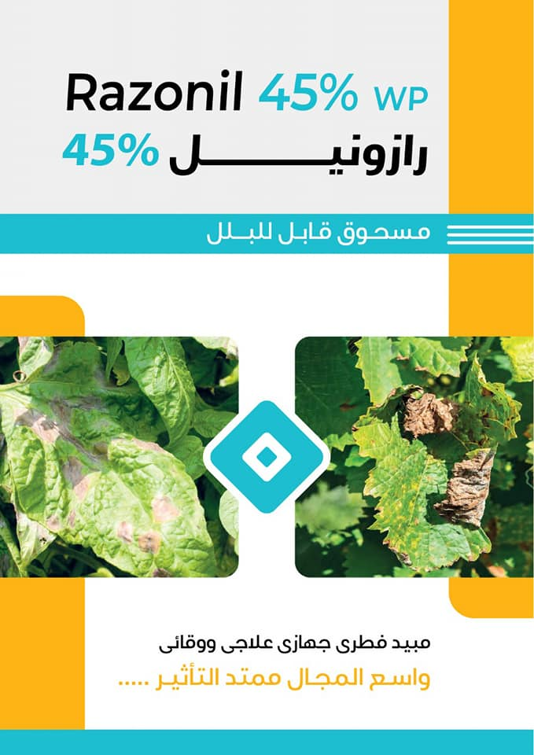
Curative and protective fungicide, late blight in potatoes, at a rate of 200 g / 100 liters of water.
Nile Done
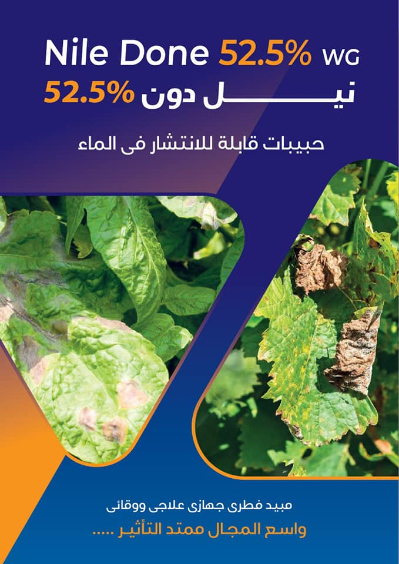
Curative and protective fungicide, downy mildew in cucumber at a rate of 50 g/100 liters of water
Nilbat
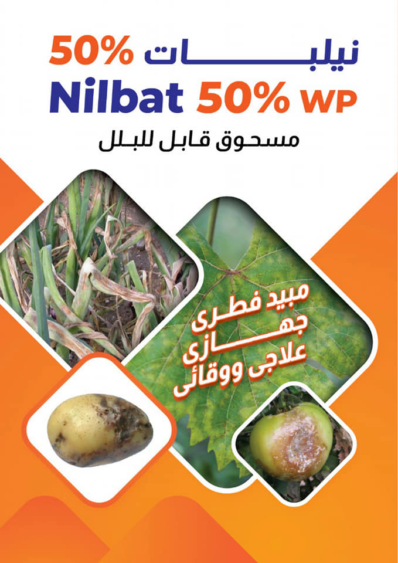
A curative and protective fungicide, late blight in potatoes, at a rate of 250 grams per feddan
Magnum
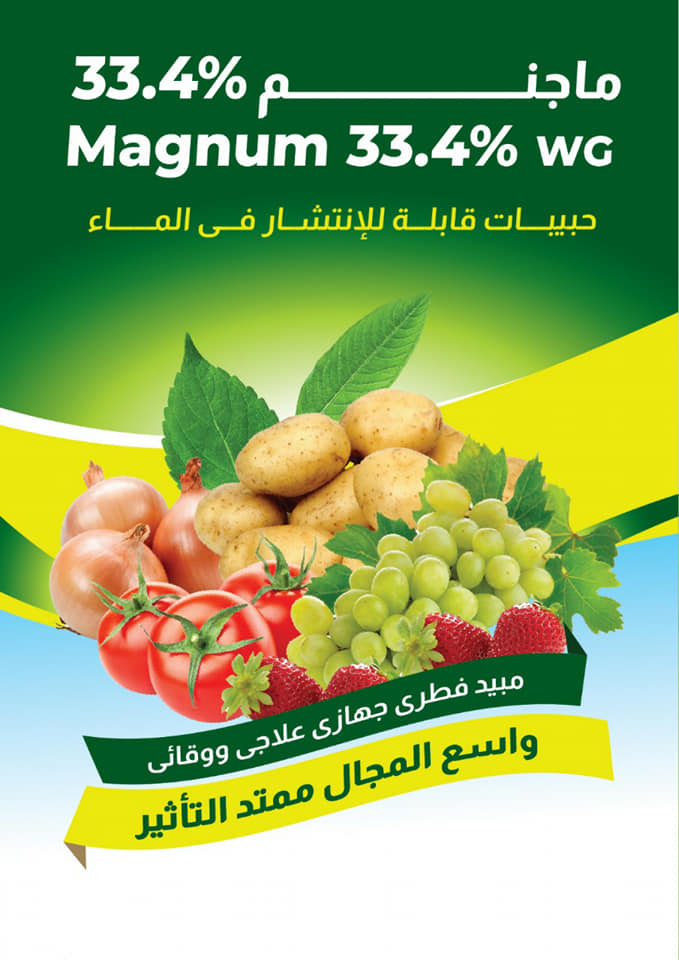
Curative and protective fungicide, fruit rot in grapes at a rate of 75 grams / 100 liters of water
find a solution
crop
product name
active ingreident
dieases
News and Events
"وادي النيل": الكيمياء الخضراء مستقبل مصر للإنتاج أغذية خالية من مسببات الأمراض
قال محمد حمدي نائب، رئيس شركة "وادي النيل" التنمية الزراعية، إن الكيمياء الخضراء تسجد مستقبل مصر في مجال إنتاج غذائي نباتي وحيواني وداجني، خال تماما من المسببات المرضية.